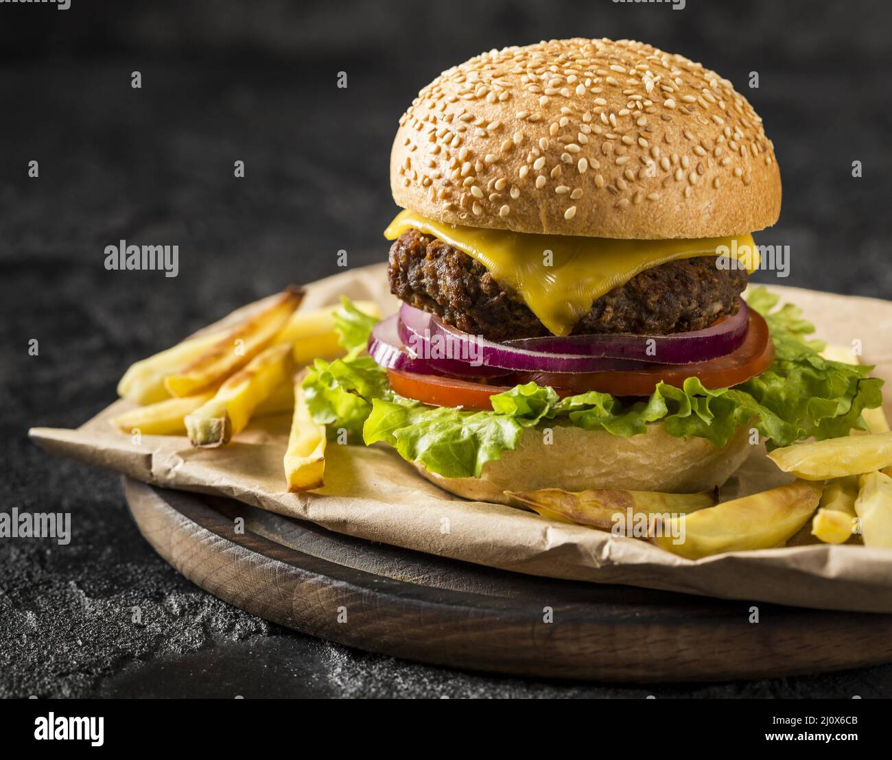

Burger:-
My favourite food is a burger. It has many layers of fresh vegetables, sauces and a patty filled between two buns. A burger is a fun dish, and everyone at home enjoys eating it. Many restaurants serve delicious burgers, but I love the one my mother makes at home.Garlic bread:-
Garlic bread (also called garlic toast) consists of bread (usually a baguette, sour dough, or bread such as ciabatta), topped with garlic and occasionally olive. Free Essay: I think garlic bread is one of the best foods. It has a crunchy crust and when you bite into it, you taste the soft center coated in butter....